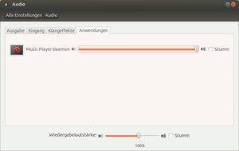

MPD auf der Benutzerebene
Dieser Artikel wurde für die folgenden Ubuntu-Versionen getestet:
Ubuntu 16.04 Xenial Xerus
Ubuntu 14.04 Trusty Tahr
Zum Verständnis dieses Artikels sind folgende Seiten hilfreich:
 Wer MPD auf dem "Alltagsrechner" installiert hat und von dort aus Musik ins Heimnetz oder Tablet/Androidgerät streamen möchte, ist ggf. mit einer Einrichtung des Servers auf der Benutzerebene (User space) besser bedient. Auch die Integration in das Audiosystem mit PulseAudio, das ja auch benutzerspezifisch eingesetzt wird, gestaltet sich so wesentlich einfacher.
Wer MPD auf dem "Alltagsrechner" installiert hat und von dort aus Musik ins Heimnetz oder Tablet/Androidgerät streamen möchte, ist ggf. mit einer Einrichtung des Servers auf der Benutzerebene (User space) besser bedient. Auch die Integration in das Audiosystem mit PulseAudio, das ja auch benutzerspezifisch eingesetzt wird, gestaltet sich so wesentlich einfacher.
Installation¶
Dazu muss zunächst MPD wie in MPD/Server beschrieben installiert werden[1]. Da MPD normalerweise als systemweiter Dienst gestartet wird, muss er zunächst im Terminal[2] gestoppt, und die systemweite Version dann aus dem Autostart entfernt werden, z.B. mit
sudo service mpd stop sudo update-rc.d mpd disable ## bzw. sudo systemctl disable mpd ## z.B. unter 16.04 mit systemd
Alternativ kann in der Datei /etc/default/mpd eine Zeile mit dem Inhalt
START_MPD= false
eingefügt werden (Editor[4] mit Rootrechten nötig).
Konfiguration¶
Die Konfigurationsordner werden dafür im Homeverzeichnis des Benutzers angelegt, im Terminal z.B. mit
mkdir ~/.mpd mkdir ~/.mpd/playlists
Außerdem wird eine Konfigurationsdatei .mpdconf im Homeverzeichnis erstellt, indem man die vorhandene Beispielkonfiguration aus dem bei Installation mit kopierten Archiv mpd.conf.gz entpackt[4], z.B. mit
gunzip -c /usr/share/doc/mpd/examples/mpd.conf.gz > ~/.mpdconf
Unter der in Xenial installierten Version hat sich der Name des Archivs geändert, entsprechend der Befehl:
gunzip -c /usr/share/doc/mpd/examples/mpdconf.example.gz > ~/.mpdconf
Achtung!
Eine bestehende Konfigurationsdatei wird damit überschrieben.
Hinweis:
Wenn die Konfigurationsdatei direkt im Homeverzeichnis liegt, muss sie - im Gegensatz zur Konfiguration in /etc/ - tatsächlich ohne Dateiendung , also als .mpdconf, existieren, ansonsten registriert MPD diese Datei nicht. Der Daemon versucht dann zunächst, ~/.mpd/mpd.conf, oder dann /etc/mpd.conf aufzurufen, startet aber ggf. nicht, wenn die gefundene Datei nicht sauber konfiguriert ist.
In einem Editor[3] wird .mpdconf dann angepasst, sodass die Konfigurationseinträge auf ~/.mpd verweisen. Die folgenden Einträge werden bearbeitet: music_directory, playlist_directory, db_file, log_file, pid_file, state_file, sticker_file
Die jeweiligen Einträge sehen dann etwa so aus:
music_directory "/PFAD/ZUR/MUSIKSAMMLUNG" playlist_directory "~/.mpd/playlists" db_file "~/.mpd/tag_cache" log_file "~/.mpd/mpd.log" pid_file "~/.mpd/pid" state_file "~/.mpd/state" sticker_file "~/.mpd/sticker.sql"
Für die Ausgabe via PulseAudio reicht im Normalfall (mit einer Soundkarte an Bord)
audio_output {
type "pulse"
name "My Pulse Output"
}Die user-Zeile muss mit vorgestellter # auskommentiert sein, da MPD unter dem jeweiligen Benutzer läuft! Die weiteren Einstellungen, z.B. für einen http-Stream, werden in MPD/Server ausführlich beschrieben.
Verwendung¶
MPD wird im Terminal mit
mpd
 gestartet[5]; wenn alles in Ordnung ist, startet MPD dann kommentarlos als Dienst im Hintergrund. Eventuelle Fehler in der Konfiguration werden mit Zeilenangaben ausgeben, sodass sie leicht zu korrigieren sein sollten.
MPD lässt sich dann über einen Client eigener Wahl steuern, zunächst muss natürlich die Datenbank eingelesen werden.
Die Wiedergabe kann über via PulseAudio in den Audio-Einstellungen gezielt gesteuert werden. Das scheint unter einer systemweiten Einrichtung nicht so problemlos zu funktionieren; mit MPD als Alsa-Ausgabe behindern sich verschiedene Programme mit Tonausgabe dann gegenseitig.
Hinweis:
Ìnsbesondere, wenn die Option auto_update gesetzt ist, kann sich der Startprozess über einige Minuten hinziehen, sodass sich Klienten zunächst nicht verbinden können! Das gilt auch beim Eintrag in den Autostart.
Eintrag in den Autostart¶
Um MPD gleich bei Systemstart mit aufzurufen, kann man folgenden Eintrag als mpd.desktop im Verzeichnis ~/.config/autostart ablegen:
1 2 3 4 5 6 7 8 | [Desktop Entry] Type=Application Name=Music Player Daemon Comment=start MPD as user when you log in Exec=mpd StartupNotify=false Terminal=false Hidden=false |
Ab Version 0.17.3-1 kann man die Datei auch von /usr/share/doc/mpd/examples/mpd.desktop übernehmen, eine entsprechende Version ist ab 13.10. Saucy Salamander in den Quellen verfügbar.
 im GMPC-Wiki
im GMPC-Wiki- Erstellt mit Inyoka
-
 2004 – 2017 ubuntuusers.de • Einige Rechte vorbehalten
2004 – 2017 ubuntuusers.de • Einige Rechte vorbehalten
Lizenz • Kontakt • Datenschutz • Impressum • Serverstatus -
Serverhousing gespendet von